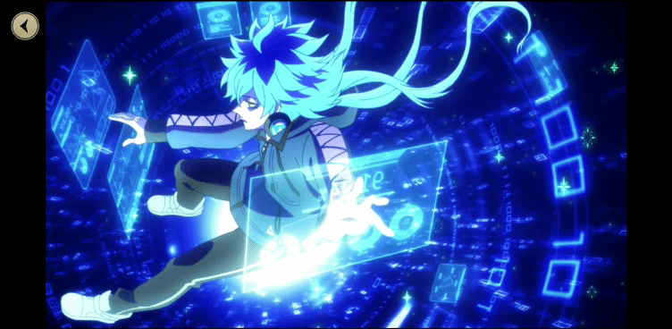

I am from the state of Texas. I am very proud of both my Mexican and American roots. I grew up glued to my computer and playing Sonic the Hedgehog. By the time I got to middle school, I got invested into Japanese anime.
I am majoring in Digital Media. The reason why I chose this was because I want to become a Web Developer! I discovered my fascination of front-end web development by playing video games and being world wide web. My dad also suggested that I do "computer stuff". He believes that I do well with this career! ""

My
I love cute things! I always try to incorporate a touch of that princess aethetic in my life! I also follow the Harajuku fashion subculture. Harajuku is a district in Tokyo Japan where the civilioans show off their fashion. I am what the western side of the internet calls "cottagecore". Vintage dresses, bunnies, frilly skirts cabins, you name it!